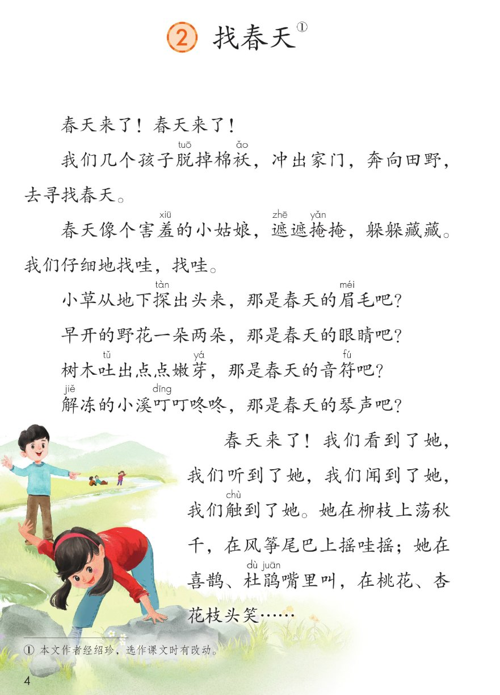
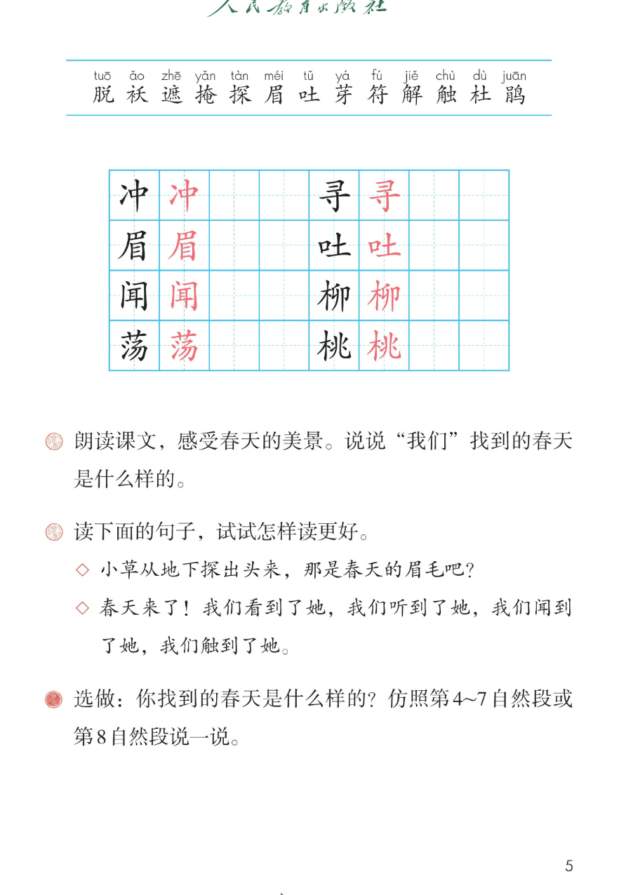

×
🔊 手机听不到声音怎么办？
① 先把手机
媒体音量调大 ，确认没开静音、没连蓝牙耳机；在微信里打开的，点右上角「⋯ → 用浏览器打开」。
② 还是没声音？到应用商店免费下载
Microsoft Edge 浏览器 （它自带朗读发声），用它打开本页面就能出声。
③ 换了 Edge 仍然没声音，说明这部手机的
硬件/系统不支持 网页朗读（多为老旧机型）；近几年买的新手机一般都能正常播放。
→ 打开声音自检
🌱 第 2 课《找春天》· 有声图文带读
统编版语文 · 第一单元·阅读 · 课本 第 4~5 页 · 作者：经绍珍（选作课文时有改动）
课文 8 段 · 13 句
会认字 13
会写字 8
听写词 10
近义词 4 组
深入理解 8 题
本课本领 朗读·找春天·仿说
🎧 五步学（可随时点任意一句、一个字、一个词单独听）： ① 听读课文 ——8 个自然段、13 句，一句一句读，读到哪一句哪一句发光；开「跟读」后读完一句留时间让你自己读。② 学字词 ——13 个会认字、8 个会写字（含书写提示），点一个读一个。③ 词语·听写·造句 ——先读课本第 5 页三道课后题，再听写 10 个词（读两遍→你写→报答案→听示范句），最后听 4 组近义词辨析。④ 深入理解 ——8 道题（认知 / 理解 / 运用 / 拓展），开放题答案不唯一，先想后看。⑤ 按顺序说·分工朗读 ——用「先…再…接着…最后」说找春天的经过，再由 8 位朗读员分段落读全文。
📚 本册第一单元·阅读（照课本目录）： 1 古诗二首 → 2 找春天（本课） → 3 开满鲜花的小路 → 4 邓小平爷爷植树 → 语文园地一
📖 课文出处（课本第 4 页脚注照录） ：① 本文作者经绍珍，选作课文时有改动。
点段前的 ①~⑧ 听整段
🔁 跟读模式：关
👁 隐藏注音（自测用）
注音只标本课要认、要写的字，以及课本随文标了音的「羞」「叮」；读音照课本第 4~5 页
🎤 朗读要求（老师标准） 读准字音 ：棉袄、害羞、遮遮掩掩、探出、解冻、触到、杜鹃，跟着课本第 4~5 页的注音读；不添字、不漏字 ：逗号停得短，句号停得长，一句一句读清楚；读出「猜」的语气 ：四个「那是春天的……吧？」是孩子们一边找一边猜，句尾轻轻往上扬；开头两句要喊出来 ：「春天来了！春天来了！」第二句比第一句更响、更高兴；最后一段越读越快 ：四个「我们……到了她」连着读；「叮叮咚咚」读得清脆，最后一个「笑」字读得亮。
①
春天来了！
春天来了！
②
我们几个孩子脱tuō 掉棉袄ǎo ，冲chōng 出家门，奔向田野，去寻xún 找春天。
③
春天像个害羞xiū 的小姑娘，遮zhē 遮掩yǎn 掩，躲躲藏藏。
我们仔细地找哇，找哇。
④
小草从地下探tàn 出头来，那是春天的眉méi 毛吧？
⑤
早开的野花一朵两朵，那是春天的眼睛吧？
⑥
树木吐tǔ 出点点嫩芽yá ，那是春天的音符fú 吧？
⑦
解jiě 冻的小溪叮dīng 叮咚咚，那是春天的琴声吧？
⑧
春天来了！
我们看到了她，我们听到了她，我们闻wén 到了她，我们触chù 到了她。
她在柳liǔ 枝上荡dàng 秋千，在风筝尾巴上摇哇摇；
她在喜鹊、杜dù 鹃juān 嘴里叫，在桃táo 花、杏花枝头笑……
🤔 想一想（点我可跳过）
点一张图，听读整页

第 4 页 · 课题与《找春天》全文

第 5 页 · 生字表与课后题
📖 人教版《语文》二年级下册 · 课本第 4~5 页 · 图片仅供个人学习，版权归人民教育出版社所有
点一个字，听读音、词语和课文里的句子；「羞」「叮」是课本随文注音的字，不在生字表里
结构、部首、笔画与书写提示为通用规范，供参考，以教材和老师的指导为准
冲
chōng
冲出 · 冲动
6 画 · 左右（冫）
左两点水写窄，右中写正，中间一竖要直
寻
xún
寻找 · 寻人
6 画 · 上下（寸）
上彐写扁，下寸的横最长，点别丢
眉
méi
眉毛 · 眉目
9 画 · 半包围（目）
尸字头写扁盖住下面，目字窄而长
吐
tǔ
吐出 · 吞吐
6 画 · 左右（口）
左口小而靠上，右土下横写平
闻
wén
闻到 · 新闻
9 画 · 半包围（门）
门框写正要大，里面耳字写小别顶框
柳
liǔ
柳枝 · 柳树
9 画 · 左右（木）
左木窄，右卯左右两半对齐，竖撇别歪
荡
dàng
荡秋千 · 摇荡
9 画 · 上下（艹）
草字头写宽盖住，下面汤要写紧凑
桃
táo
桃花 · 桃子
10 画 · 左右（木）
左木窄，右兆的撇点分开，竖弯钩舒展
点一行，听题目、句子和怎么读更好
📖 课后题（课本第 5 页照录） ：① 朗读课文，感受春天的美景。说说“我们”找到的春天是什么样的。 ② 读下面的句子，试试怎样读更好。 ③ 选做：你找到的春天是什么样的？仿照第4~7自然段或第8自然段说一说。
课后题 ① 朗读课文，感受春天的美景。说说“我们”找到的春天是什么样的。
句子 1 ◇ 小草从地下探出头来，那是春天的眉毛吧？
句子 2 ◇ 春天来了！我们看到了她，我们听到了她，我们闻到了她，我们触到了她。
选做 ③ 你找到的春天是什么样的？仿照第4~7自然段或第8自然段说一说。
读两遍 → 你在纸上写 → 报答案 → 听示范句
准备听写 · 共 10 个词
○ ○ ○
点下面的「开始听写」，听到一个词就写一个词。
▶ 开始听写
🔁 再读一遍
👁 看答案
点词听读，点句子听示范句，再自己说一句
1 冲出 会写字 · 冲
示范句：春天来了，我们冲出家门去找春天。
✏️ 我也能说：谁 + 冲出 + 哪里
2 寻找 会写字 · 寻
示范句：我们几个孩子去田野里寻找春天。
✏️ 我也能说：谁 + 在哪里 + 寻找什么
3 眉毛 会写字 · 眉
示范句：小草从地下探出头来，那是春天的眉毛吧？
✏️ 我也能说：什么 + 像谁的眉毛
4 吐出 会写字 · 吐
示范句：树木吐出点点嫩芽。
✏️ 我也能说：什么 + 吐出 + 什么
5 闻到 会写字 · 闻
示范句：我们闻到了她，一股淡淡的花香。
✏️ 我也能说：谁 + 闻到了 + 什么味儿
6 柳枝 会写字 · 柳
示范句：她在柳枝上荡秋千。
✏️ 我也能说：柳枝上 + 有什么
7 荡秋千 会写字 · 荡
示范句：春天在柳枝上荡秋千。
✏️ 我也能说：谁 + 在哪里 + 荡秋千
8 桃花 会写字 · 桃
示范句：她在桃花、杏花枝头笑。
✏️ 我也能说：桃花 + 是什么颜色的
9 害羞 课文里的词
示范句：春天像个害羞的小姑娘。
✏️ 我也能说：谁 + 像个害羞的小姑娘
10 解冻 课文里的词
示范句：解冻的小溪叮叮咚咚。
✏️ 我也能说：什么 + 解冻了
相同点 / 不一样在哪 / 各造一句
仔细 — 认真
相同：都写做事用心、不马虎 。
不一样：仔细 多用在看、找、检查上，课文说「我们仔细地找哇」；认真 多用在听讲、写字、做事的态度上。
仔细：我们仔细地找哇，找哇。
探出 — 伸出
相同：都写把一样东西往外送 。
不一样：探出 是慢慢地、悄悄地把头往外伸，带着好奇，课文写小草探出头来；伸出 就是把手脚平平地伸出去，没有偷偷的感觉。
探出：小草从地下探出头来。
害羞 — 怕羞
相同：都写不好意思、不愿让人看 。
不一样：害羞 是书面上常用的词，课文写「春天像个害羞的小姑娘」；怕羞 是平时说话用的，更口语。
害羞：春天像个害羞的小姑娘。
遮遮掩掩 — 躲躲藏藏
相同：都写不想让人一下子看见 。
不一样：遮遮掩掩 是用东西挡一挡，还露出一点；躲躲藏藏 是整个藏起来，找也找不着。课文把两个词连着用，写春天像在跟我们捉迷藏。
遮遮掩掩：春天遮遮掩掩。
AABB 式 遮遮掩掩 躲躲藏藏 叮叮咚咚
那是……吧？ 那是春天的眉毛吧？ 那是春天的眼睛吧？ 那是春天的音符吧？ 那是春天的琴声吧？
找哇，找哇 找哇，找哇 摇哇摇 荡秋千
春天藏在哪儿 小草 野花 嫩芽 小溪 柳枝 风筝尾巴 喜鹊 杜鹃 桃花 杏花
标「答案不唯一」的题，说得有道理都对
认知 课后题①：「我们」找到的春天是什么样的？从课文里找出找到的景物说一说。看解析
🤔 想一想
解析：
小草、野花、嫩芽、小溪，四个那是春天的什么吧。
柳枝、风筝尾巴、喜鹊、杜鹃、桃花、杏花。
春天刚来时变化很小，所以要仔细找才看得见。
认知 第4~7自然段把小草、野花、嫩芽、小溪分别比作了春天的什么？看解析
🤔 想一想
解析：
眉毛、眼睛、音符、琴声，四个名字分别配四样景物。
小草细细弯弯像眉毛，野花一朵两朵像眨眼睛，嫩芽一点点像音符，溪水叮咚像琴声。
什么怎么样，那是春天的什么吧。
理解 为什么说春天「像个害羞的小姑娘，遮遮掩掩，躲躲藏藏」？看解析
🤔 想一想
解析：
一朵两朵、点点、探出头，都是很小很少。
正因为藏起来了，才要仔细地找哇，找哇。
把看不见的春天写成了一个能想象的小姑娘。
理解 四个「那是……吧？」为什么用问句，末尾还要加一个「吧」？看解析
🤔 想一想
解析：
是几个孩子自己找、自己猜，不是课文直接告诉我们的。
把话说得轻一点、留一点余地，像商量。
句尾轻轻往上扬，不能读成肯定句。
理解 最后一段连着写四个「我们……到了她」，这样写好在哪里？看解析
🤔 想一想
解析：
看到、听到、闻到、触到，用了四种感官。
四个我们排在一起，读起来有节奏、有气势。
前面找得仔细又慢，这里一下子全找到了，节奏变快。
运用 课后题②：读下面的句子，试试怎样读更好。看解析
🤔 想一想
解析：
第一句是猜，第二句是找到后的高兴。
探出、吧；春天来了、看到听到闻到触到。
为什么轻、为什么快，讲得出来就说明读懂了。
🌈 答案不唯一，说得有道理都对
运用 课后选做题：仿照第4~7自然段或第8自然段，说说你找到的春天。看解析
🤔 想一想
解析：
从第③区春天藏在哪儿里挑，或者自己在外面看到的。
什么怎么样，那是春天的什么吧。／她在什么上做什么。
读完问问同桌，听得出春天藏在哪儿吗。
🌈 答案不唯一，说得有道理都对
拓展 假如你也是「我们几个孩子」中的一个，找春天时你最想做什么？为什么？看解析
🤔 想一想
解析：
课文用了看、听、闻、触四种办法，你最想用哪一种。
说说你在校园里、小区里真的找过什么。
为什么最想做这一件，理由比答案更重要。
🌈 答案不唯一，说得有道理都对
点一步，听这一步
1
春天来了，冲出家门
3
找到四样景物
4
真的找到她了
5
她还藏在别处
💬 说话支架：先 说春天来了、我们冲出家门 → 再 说春天遮遮掩掩不好找 → 接着 说找到的小草、野花、嫩芽、小溪 → 最后 说我们真的看到、听到、闻到、触到了她。
点一张卡，听这一段的句子
🌱 旁白·喊春天
春天来了！春天来了！
💬 读得响亮 ，第二句比第一句更高兴
🏃 旁白·出发去找
我们几个孩子脱掉棉袄，冲出家门，奔向田野，去寻找春天。
💬 四个动作连着读 ，越读越快，读出急着出门
🌸 旁白·害羞的春天
春天像个害羞的小姑娘，遮遮掩掩，躲躲藏藏。
💬 轻一点、慢一点 ，像春天在跟我们捉迷藏
🔍 旁白·仔细地找
我们仔细地找哇，找哇。
💬 两个「找哇」中间停一下 ，像边走边低头找
🌿 朗读员·小草野花
小草从地下探出头来，那是春天的眉毛吧？早开的野花一朵两朵，那是春天的眼睛吧？
💬 句尾「吧」轻轻上扬 ，是猜的语气
🎵 朗读员·嫩芽小溪
树木吐出点点嫩芽，那是春天的音符吧？解冻的小溪叮叮咚咚，那是春天的琴声吧？
💬 「叮叮咚咚」读得清脆、有节奏
🙌 旁白·找到她了
春天来了！我们看到了她，我们听到了她，我们闻到了她，我们触到了她。
💬 四个「我们」一句比一句响、一句比一句快
🪁 旁白·她在哪儿
她在柳枝上荡秋千……在桃花、杏花枝头笑……
💬 轻轻晃 着读，「笑」字往上扬，句末留一点余味